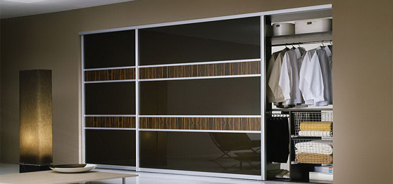

Рекомендации наполнения шкафов

Поскольку рассортировка вещей внутри шкафа-купе – не самое приятное и емкое по времени мероприятие, мы поможем вам свести к минимуму необходимость его проведения. Варианты наполнения шкафов-купе могут быть самыми разными, но результат всегда один и тот же – вы сможете долго пользоваться мебелью, и вещи все время будут находиться на своих местах. Для этого необязательно быть педантом – мы знаем несколько секретов, помогающих без труда поддерживать практически идеальный порядок:
1. Слишком большое или предельно малое расстояние между внутренними полками одинаково неприемлемо. Неправильные пропорции приводят к значительной потере вместительности отделений и мешают поддерживать порядок. В первом случае это связано с чрезмерной загруженностью вещами, а во втором с ограничением возможности производить какие-либо действия. Вследствие этого, мы рекомендуем придерживаться тех габаритов, которые определяются в индивидуальном порядке в процессе составления первичного эскиза шкафа-купе. В среднем расстояние между полками должно составлять около 350 мм, но оно может изменяться в зависимости от того, какие вещи планируется хранить в этих секциях.
2. Не рекомендуется отводить под редко используемые вещи центральные отделения шкафа-купе – для этих целей существуют антресоли. Кстати, их высота тоже влияет на общую вместительность шкафа-купе. Если этот параметр слишком велик, то полезный объем корпуса уменьшается на соответствующее значение. Получается, что в корпусе имеется отделение для хранения воздуха.
3. По мере возможностей нужно избегать наличия труднодоступных мест – так называемых «мертвых зон». Проблема их появления особенно актуальна для глубоких трапециевидных и угловых шкафов-купе. В процессе эксплуатации такой мебели в удаленных отделениях либо накапливается беспорядок, либо образуется пустота. В этом случае рекомендуется оснащать такие отделения специальными механизмами, которые обеспечат доставку вещей в зону досягаемости.
4. Отделения, предназначенные для хранения верхней одежды, должны иметь высоту, соответствующую размеру самой длиной вещи в гардеробе. Не стоит делать его с слишком большим запасом в надежде на то, что на нижней полке получится хранить обувь или какие-то другие вещи. На практике это место чаще всего пустует.
5. Поскольку большинство из нас не любит наклоняться, нижние придонные отделения рекомендуется оснастить ящиками. В зависимости от того, что вы там собираетесь разместить, подбирается механизм выдвижения. По желанию клиента выдвижные системы могут быть укомплектованы устройствами Push-to-Open или Easys, которые обеспечивают ящикам функцию самостоятельного открытия.
6. Важную роль в поддержании порядка в корпусе играет внутренняя подсветка шкафа-купе – этому вопросу посвящена отдельная статья.
7. Для хранения белья, носков и других мелких вещей рекомендуется использовать несколько неглубоких ящиков, которые оснащены организационными системами. Такой встроенный мини-комод поможет избежать появления беспорядка на полках и обеспечит быстрый поиск нужной вещи.
Мы перечислили общие принципы, способствующие поддержанию порядка внутри корпуса, но это лишь часть наших возможностей. Существует еще достаточно много методов, которые мы применяем при производстве шкафов-купе для обеспечения их функциональности и повышенной вместительности. Какие из них следует применять при изготовлении конкретной модели, выясняется в процессе обсуждения проекта с заказчиком.
Сезонное зонирование корпуса
Разделение внутреннего пространства шкафа-купе по принципу «лето-зима» делает мебель более комфортабельной, а в некоторых случаях даже немного увеличивает вместительность корпуса. Этот метод основан на рассортировке вещей по сезонам и позволяет упорядочить гардероб. Если рассмотреть примеры наполнения шкафов-купе, изготовленных по типовым проектам на крупных фабриках, то можно заметить, что у этой мебели в лучшем случае имеются разные отделения для длинных и коротких вещей. Из-за такой конструкции ухудшаются эксплуатационные характеристики мебели, поскольку ее владельцы зачастую вынуждены хранить летнюю, осенне-весеннюю и даже зимнюю одежду на одной штанге – это очень неудобно.
Мы предлагаем другой подход к распределению вещей внутри корпуса. Если шкаф-купе имеет высоту от пола до потолка, то в одной секции легко можно обустроить две зоны. То есть внизу на штанге будет находиться одежда, которая нужна в данный момент, а в другом отделении следует хранить то, чем вы сейчас не пользуетесь. При смене сезонов, вещи меняются местами за один раз, и у вас никогда не будет ни путаницы, ни беспорядка.
При выборе такой конструкции корпуса в верхних отделениях рекомендуется устанавливать пантографы, которые облегчают процесс замены одежды. Эти механизмы позволяют достать нужный предмет без использования стремянки. Достаточно просто потянуть за свисающую вниз ручку, и штанга с вещами опустится на специальных рычагах на уровень ваших глаз. Остается поменять местами гардероб и поднять одежду наверх при помощи того же механизма. Обычно эта процедура выполняется 3-4 раза в год, она не отнимает много времени и под силу даже ребенку.
В идеале для семьи из 3-4 человек требуется зонирование двух отдельных секций, однако такую «роскошь» могут позволить себе владельцы шкафов-купе с 4-мя фасадами и более. При этом желательно, чтобы одно из верхних отделений должно быть больше нижнего и наоборот - такая рокировка зон связана с разной длиной одежды.
Наполнение для узких шкафов-купе
Обычно наполнение узкого шкафа-купе практически не отличается от внутреннего пространства моделей с глубоким корпусом. Разница лишь в том, что для шкафов уже 450 мм (габарит указан без учета раздвижной системы) не подходят традиционные штанги для плечиков. Одежда, размещенная в таких отделениях, контактирует с фасадами, что мешает нормально пользоваться мебелью.
Однако эта особенность - не повод отказываться от заказа узкого шкафа-купе. Для таких моделей разработана специальная фурнитура, позволяющая изготовить удобную мебель, в которой можно хранить весь гардероб – от белья до шуб и пальто. Просто в данном случае эта одежда располагается в корпусе не перпендикулярно фасадам, а находится с ними в параллельных плоскостях.
Есть еще один нюанс, без учета которого узкие модели становятся менее вместительными. Дело в том, что ширина плечиков составляет приблизительно от 450 до 500 мм, а средняя ширина дверных полотен и соответственно, секций корпуса – 650-800 мм. Отсюда следует, что в таких моделях пустует достаточно много места, из-за чего уменьшается полезный объем шкафа. Есть два выхода – нужно либо уменьшать фасады до 550 мм, либо, наоборот, увеличивать их приблизительно до 850-900 мм и поставить в такой секции вертикальную перегородку, оснастив получившееся отделение двумя-тремя дополнительными полками. Второй вариант считается более практичным и выгодным, поскольку в случае с уменьшения ширины дверного полотно, увеличивается общее количество фасадов для шкафа, что автоматически приводит к удорожанию изделия.
Наполнение радиусных шкафов-купе
В виду конструктивных особенностей наполнение для радиусных шкафов-купе в ряде случаев отличается от наполнения для всех остальных моделей. Ощутимой разницы нет только у мебели с большим корпусом – это касается как прямолинейных, так и угловых шкафов.
Для угловых радиусных шкафов-купе, корпус которых состоит из дна, крыши и двух вертикальных стоек, соединенных между собой под прямым углом и выполняющих функцию задних стенок, основы проектирования строятся на других принципах:
1. В небольших угловых радиусных шкафах-купе, а именно такие модели в основном устанавливаются в типовых квартирах, проблематично сконструировать вместительную секцию для хранения верхней одежды - ширина пантографа или стационарной штанги в среднем для них составляет 500-600 мм. Вследствие этого рекомендуется делать корпус во всю высоту стен (от пола до потолка) и делить среднюю секцию на два отделения, при этом верхняя зона оснащается пантографом, а нижняя стационарной штангой.
2. Две крайние боковые секции таких моделей обычно комплектуются скошенными или радиусными полками. Расстояние между ними зависит от глубины отделений и того, какие вещи планируется хранить в этих зонах.
3. Если есть необходимость в оснащении компактного радиусного шкафа-купе ящиками или выдвижными корзинами, место для них можно выделить только в центральной секции. Это ограничение связано с тем, что установка данных механизмов в боковых отделениях технически невозможна.
4. Угловой радиусный шкаф-купе для прихожей в малогабаритной квартире может иметь другое наполнение – в центральной части корпуса закрепляются скошенные или радиусные полки, а ближе к лицевому краю вертикальных стоек прикручиваются крючки для верхней одежды и сумок.
5. Не рекомендуется применять методы формирования внутреннего пространства, разработанные для моделей с большим корпусом, к компактным шкафам. Даже при соблюдении всех пропорций невозможно обеспечить нормальные эксплуатационные характеристики этой мебели. Не стоит проводить эксперименты, причем за свои же деньги, гораздо практичней использовать проверенные технологии.
Принцип формирования внутреннего пространства для компактных диагональных (треугольных) шкафов-купе такой же точно, как и для небольших радиусных моделей. Разница между этими модификациями заключается лишь в форме крыши и днища, а в остальном они полностью идентичны.
Наполнение угловых шкафов-купе
В нашем случае наполнение углового шкафа-купе лучше всего рассмотреть на примере Г-образных моделей. Такая избирательность связана с тем, что эта конструкция корпуса наиболее популярна среди клиентов. К тому же наполнение диагональных (треугольных) шкафов мы уже рассмотрели в предыдущем разделе.
По сути дела, внутреннее пространство Г-образных шкафов-купе формируется по тем же правилам, что и у прямолинейных моделей. Исключение составляет только угловая секция корпуса. Помимо использования вспомогательных механизмов при проектировании этой зоны можно задействовать способ «зима-лето». Кстати, он более практичен и выгоден, чем применение поворотно-выдвижных систем, которые подходят только для комбинированных угловых шкафов-купе, так как только при наличии распашного фасада их установка имеет смысл. Более подробно об этом вы сможете узнать из статьи о фурнитуре и механизмах для мебели, оснащенной разными видами раздвижных систем.
Сезонное зонирование угловых шкафов-купе с Г-образной формой корпуса не позволяет установить пантограф в верхнем отделении, так как для его передвижения необходимо выделить свободную зону в этой секции. В прямолинейных моделях рычаги опускаются за пределы внутреннего пространства корпуса, а в нашем случае они проделывают свой путь сверху вниз внутри отделения. То есть довольно объемный участок шкафа должен быть пустым, из-за чего теряется полезный объем.
Чтобы из-за применения пантографа не пострадала вместительность шкафа-купе, рекомендуется использовать обычные стационарные штанги для одежды. В этом случае угловая секция корпуса делится по высоте на более высокое и низкое отделения – их точные габариты зависят от размеров вещей. При этом в дальней труднодоступной зоне хранится та часть гардероба, которой никто в данный момент не пользуется, а напротив фасада висят вещи для каждодневной носки. При смене сезонов происходит ротация одежды, благодаря чему, внутри углового шкафа-купе всегда поддерживается порядок.
Есть еще один способ облегчить доступ к угловой секции – можно сделать корпус шкафа из трех отдельных элементов. По этому принципу проектируется и изготавливается большинство современных Г-образных кухонь. В таком случае при открытии соседних фасадов, вы сможете беспрепятственно добраться до любой вещи, хранящейся в этой секции. К недостаткам таких модификации можно отнести наличие видимых стыковочных швов и большую глубину угловой секции, которая создает определенные неудобства при эксплуатации такого шкафа-купе. Впрочем, мелкие недостатки имеются у любой угловой модели, поэтому клиент должен определиться с нашей помощью, какие из них для него менее существенны.
Наполнение для встроенных шкафов-купе
Рассматривая наполнение встроенного шкафа-купе, следует учитывать, что эта мебель, также представлена несколькими модификациями, имеющими существенные конструктивные отличия. Некоторые из них являются практически точной копией корпусных шкафов-купе, разница между ними состоит лишь в том, что у встроенных моделей нет крыши и днища, а иногда и боковых стоек с задней стенкой. Во всем остальном эти модификации схожи между собой и их внутреннее пространство формируется по одним и тем же принципам.К категории встроенных шкафов-купе также относятся и просторные гардеробные комнаты, наполнение которых может существенно отличаться от другой мебели этого типа:
1. Для наполнения больших встроенных шкафов-купе принято использовать современные гардеробные системы, обеспечивающие большое количество вариантов формирования внутреннего пространства внутри такой комнаты. Подробно эти элементы описаны в отдельной статье.
2. Просторный встроенный шкаф-купе может иметь начинку, состоящую из стеллажей, которые изготовлены из плит ЛДСП или МДФ. Собранные воедино отдельные элементы имеют П-образную форму, а их внутренняя начинка полностью идентична наполнению традиционных шкафов-купе.
3. Для узких и удлиненных гардеробных комнат, под которые зачастую переделывают вместительные кладовые в «хрущевках», не подходят ни первый, ни второй варианты. В таких помещениях рекомендуется отвести одну часть пространства под отделение с полками и нижними ящиками, а все остальное пространство лучше заполнить конструкцией из хромированных труб для хранения рубашек, костюмов, юбок, платьев, брюк и верхней одежды. Вверху над трубами, можно установить пантограф, благодаря которому вместительность такой гардеробной комнаты увеличится на 15%.
Вообще, подавляющее большинство встроенных шкафов-купе проектируется не по общепринятым правилам, а исходя из целей заказчика и возможностей, которые предоставляет отведенная под монтаж зона. Более детально этот вопрос можно рассмотреть только на замере после предварительной беседы с клиентом.
Наполнение шкафов-купе для разных комнат
Формируясь по ряду общих принципов, наполнение шкафов-купе для разных комнат имеет некоторые, если можно так выразиться, - «персональные отличия». Связано это с индивидуальностью требований, которые предъявляются к этой мебели. Если вкратце рассмотреть особенности формирования внутреннего пространства в корпусах моделей для отдельно взятых комнат в квартире, то мы получим следующую картину:
Наполнение для шкафа-купе в прихожую
Правильно подобранное наполнение шкафа-купе в прихожую позволяет владельцам такой мебели одновременно хранить достаточно много вещей и иметь одну разгруженную секцию, в которой должна находиться сезонная одежда и обувь – чрезмерная перегруженность этого отделения приводит к тому, что таким шкафом-купе неудобно пользоваться. Поэтому в задачу конструкторов, проектирующих модели для прихожих, входит выделение небольшой свободной зоны не в ущерб общей вместительности корпуса.
Наполнение для шкафа-купе в детскую
В силу возрастных особенностей ребенка и в целях обеспечения его безопасности наполнение шкафа-купе для детской должно быть подобрано таким образом, чтобы ребенок мог самостоятельно достать любую личную вещь из корпуса. Отделения, находящиеся в верхних зонах секций, временно отводятся для нужд родителей. При этом нужно предусмотреть то, что детские вещи со временем будут накапливаться, а сам ребенок через 3-4 года сможет с легкостью пользоваться и верхними отделениями. При выборе выдвижных и подъемных механизмов для такого шкафа-купе рекомендуется отдавать предпочтение простым и надежным системам, чтобы ребенок не испытывал затруднений в процессе их использования и не смог ничего поломать.
Наполнение для шкафа-купе в гостиную
Эта мебель предназначена не только для хранения гардероба, поэтому наполнение шкафа-купе в гостиную подбирается с учетом установки в корпусе аудио- и видеотехники, а также красивых сервизов, коллекций и сувениров. Зачастую подобные модели имеют открытые и закрытые зоны, при этом корпус таких шкафов-купе представляет собой единую конструкцию. Внутреннее пространство секций, оснащенных раздвижными системами, формируется по базовым правилам. Наполнение шкафа-купе для спальни Наполнение шкафа-купе в спальню, помимо обеспечения повышенной вместительности должно содействовать быстрому поиску любой вещи. В большинстве случаев именно в этой комнате хранится гардероб обеих супругов, поэтому дизайнеры мебели формируют внутреннее пространство таким образом, чтобы у каждого из них были свои отделения, и нужная одежда всегда находилась под рукой. Для изготовления этих моделей рекомендуется использовать выдвижные сетки для белья и обуви, брючницы, пантографы и самовыдвижные ящики в нижних отделениях.